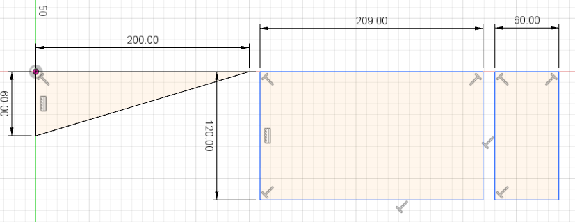
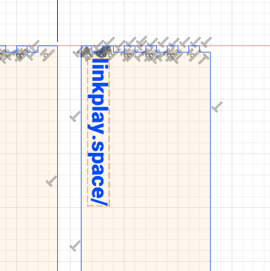

Week 3: Laser Cutting
first 2D Design
This week, we got an introduction into laser cutting. Mr. Ingrassia talked about the technology, the anatomy of a laser cutter, focus and kerf and about different techniques. T laser cutter
The assignment for this week is, that we create a 2D Design that can be cut in the laser cutter. It has to feature cuts, engravings and joints.
I decided to make a kicker for fingerboarding. A kicker is basically a small ramp that you can use to jump of of.
The start was to decide the dimensions and the angle. The length I chose was 20cm with a width of 12 cm and a depth of 6cm.
This is the side of the kicker. Its upside down right now but that doesn't matter.
The top piece of the kicker needs to be the same length as the slanted side of the side. To do that, I used Fusion 360s measure tool.
It resulted in about 209cm. I made a rectangle with the dimensions 20,9cm and the width of my kicker, so 12cm.
This is the top piece. Next up was the backside of the kicker. Its a 12x6cm piece

The next step is to figure out how I'm going to assemble the pieces. I added notches to the edges of each piece.
To complete the 2D design I added a little engraving.

I ended up opening the dxf file in LibreCAD to layer the engraving. I also changed the engraving a bit.
first cutting attempt
After finishing up the design I asked for a 510mm x 140mm piece of 3mm thick wood.
I opened up the dxf file in VisiCut and used these settings which Marcel and Ömer recommended to me: Power 90, Speed 30 and Frequency 50.
Then I went to the laser cutter, adjusted the xy positions, focus and started the job.

This first run made me reaize some things:
- I made the top part the wrong length.
- I made the back part the wrong height
- I didn't take the kerf into account which means the notches are not tight enough to fit together...
- For some reason the text is much smaller in real life compared to LibreCAD
- One side part has to be mirrored for the text to appear at the end
Second Try
I figured the length of the top part was probably wrong because of the notches. I measured again and it came out at about 197.9 mm.
I trimmed the top and the back part and they should fit now.
To compensate for kerf you need to follow some steps in Fusion 360.
- Set the Workspace to CAM.
- Click on Cutting and select a Tool.
- In the "Select Tool" window.
- Select Cutting as Operation.
- Select only Laser Cutter as Type.
- In the "Libraries" list select "All" and then scroll down to "Samples/Sample Profile Tools (Metric) and double click 0.4mm laser cutter.
- Then click on "Select..." again and edit the tool by right clicking.
- Go to the tab "Cutter" and change the kerf width to something like 0,15 - 0,2mm, then click ok.
- In the "2D Profile" window open the second tab and select the contours of your sketch. (Note: The direction of the arrows that appear is important.)
- Then go to the fourth tab and change "Compensation Type" to "In computer".
- Press "OK".
- Then, after it finished calculating you can press the post processing button.
- Before continuing you need to download a special file from the Autodesk HSM Website. Search for DXF and download AutoCAD DXF.
- Then inside the Post Process folder select the folder with the file. Be sure to set the "Unit" to "Millimeter".
- Press "Post" and then you can save your dxf file.
- After that, open up the dxf file in LibreCAD and delete the extra paths that are added.
For a more detailed description of this process go to the Documentation of Ole Langenbach.
After a cutting the new design I had good and bad news.
The good news was, that the pieces now were the right size.

The bad news was that the kerf adjustment wasn't right for some reason, which means that the parts don't hold together on their own.
I opened up the dxf file in LibreCAD to measure the notches.
It turns out, that the notches of the top and backside are 0.2mm bigger and the notches on the side parts 0.2mm smaller... So, something must have gone wrong in the Fusion 360 export. The good thing is, that I dont need to cut the top and back part again, just the sides.
After trying a couple of settings in the 2D Profile menu and it not helping, I finally figured out that the issue was these little arrows.
These arrows decide in which way the export compensates for the kerf. I had it set to the wrong side so thats why in the export those notches were 0.2mm smaller.
After exporting only the sides and cutting them I could finally assemble the kicker. 0.2mm might have been a bit too much but I just used some brute force to fit the parts together.
Engraving
For the second try I completely left out the engraving because I decided the text wasn't working correctly since every program interprets them differently for some reason.
I thought about engraving a pattern into every piece so I went to thepatternlibrary.com and picked out this pattern. I Inverted the pattern in Photoshop and did a test run for engraving
I really liked how it looked but it took about 2 minutes to do this little patch. VisiCut calculated, that a patter of the size of all parts would take about 1h30. I decided that it's probably not worth it.
Then, I started to work on a custom engraving that I could theoretically put anywhere. I found an old logo I made for a graphics design course last year and wanted to base my engraving on that. I put the URL to the Gitlab page under my logo and saved it as an svg.
Then I did some test engravings to find the right settings.
The optimal settings ended up being a power of 40 and speed of 40.
All I had to do now was to disassemble my kicker and engrave the parts. I measured where exactly the laser xy had to be and marked it with a pencil.

And this is how it looks after engraving the parts. This is my finished, assembled project.
{kind=link}